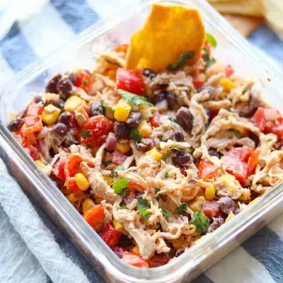

Southwest Chicken Salad

Ingredients
- 12 ounce shredded or diced chicken
- 15 ounce can black beans, rinsed and drained
- 1 cup corn
- 3/4 cup cherry tomatoes, quartered
- 1/2 medium red bell pepper, diced
- 1/2 cup red onion, diced
- 1/4 cup cilantro, chopped
- 3/4 cup Greek yogurt (or 1/2 cup yogurt + 1/4 cup mayonnaise)
- 1 teaspoon smoked parprika
- 1 teaspoon chili powder (optional, leave out if sharing with little ones)
- 1/2 teaspoon cumin
- 1/2 teaspoon garlic powder
- 1 tablespoon olive oil
- 1 tablespoon honey or maple syrup
- 1/4 teaspoon salt and pepper, season to taste
- 1 lime
- shredded cheese
- avocado
Steps
- Prepare the salad: In a large bowl, combine the chicken and the vegetables.
- Cook the chicken: If you haven't already, cook and shred or dice the chicken breast (or use pre-cooked rotisserie chicken). Add it to the salad.
- Make the dressing: In a small bowl, whisk together all the ingredients.
- Assemble the salad: Drizzle the dressing over the salad and toss until everything is well coated. Top the salad with sliced avocado and shredded cheese (if using).
- Serve: Enjoy right away as a light lunch or dinner, or store it in the fridge for a meal prep option!
Recipe by Min Kwon · Kidfriendly Meals, from MJ and Hungryman. Saved here for personal use; the original has the full notes, tips and photos. Open original